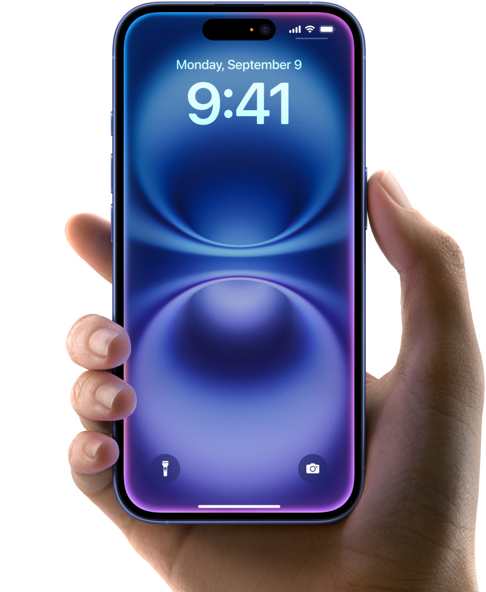

অ্যাপল আইফোন ১৬ মুক্তি: প্রযুক্তির নতুন মাইলফলক
ক্যালিফোর্নিয়া, ১২ সেপ্টেম্বর, ২০২৪— বিশ্বখ্যাত প্রযুক্তি
প্রতিষ্ঠান অ্যাপল আজ তার সর্বশেষ স্মার্টফোন মডেল, আইফোন ১৬,
আনুষ্ঠানিকভাবে উন্মোচন করেছে। মার্কিন যুক্তরাষ্ট্রের কুপারটিনোতে
অ্যাপলের বাৎসরিক ইভেন্টে এই ফোনের ঘোষণা দেওয়া হয়, যা স্মার্টফোন
প্রযুক্তিতে এক নতুন অধ্যায়ের সূচনা করেছে।
নতুন বৈশিষ্ট্য
আইফোন ১৬ সিরিজটি অত্যাধুনিক প্রযুক্তির এক বিস্ময়কর সংমিশ্রণ নিয়ে
এসেছে। এটির মধ্যে রয়েছে A18 বায়োনিক চিপ, যা পূর্ববর্তী মডেলগুলোর
তুলনায় ৪০% দ্রুততর পারফরমেন্স প্রদান করবে। এছাড়া নতুন মডেলে রয়েছে
১২০ হার্জ প্রোমোশন ডিসপ্লে, যা আরও মসৃণ এবং গতিশীল গ্রাফিক্স
প্রদর্শন করতে সক্ষম। আইফোন ১৬-এর ক্যামেরা প্রযুক্তিতে উল্লেখযোগ্য
পরিবর্তন এসেছে। এবার আরও উন্নত ৪৮ মেগাপিক্সেল প্রাইমারি ক্যামেরার
সাথে থাকছে ১২ মেগাপিক্সেলের টেলিফটো লেন্স ও আল্ট্রা-ওয়াইড লেন্স।
নাইট মোড এবং পোর্ট্রেট মোডে বিশেষ উন্নয়ন করা হয়েছে, যা
ব্যবহারকারীদের নিম্ন আলোতেও দারুণ মানের ছবি তোলার সুবিধা দেবে।

ব্যাটারি লাইফ ও চার্জিং প্রযুক্তি
ব্যাটারি লাইফেও অ্যাপল বড় ধরনের উন্নয়ন এনেছে। আইফোন ১৬-এর ব্যাটারি
আগের চেয়ে ২০% বেশি সময় ধরে চার্জ ধরে রাখতে সক্ষম হবে। এছাড়াও নতুন
‘ম্যাগস্যাফ ২.০’ প্রযুক্তি যুক্ত হওয়ায় দ্রুততার সাথে ওয়্যারলেস
চার্জিং সম্ভব হবে।
পর্দার আকার ও ডিজাইন
এই নতুন মডেলটি তিনটি সাইজে পাওয়া যাবে— ৬.১ ইঞ্চি, ৬.৭ ইঞ্চি এবং ৫.৮
ইঞ্চি। ডিজাইনের ক্ষেত্রে আইফোন ১৬-এর কাঁচের পেছন এবং স্টেইনলেস
স্টিলের ফ্রেম আগের মতোই থাকলেও, এর সাথে যোগ হয়েছে নতুন চারটি রঙের
অপশন: মেটালিক ব্লু, গ্লসি গ্রিন, সিলভার এবং ব্ল্যাক।
মূল্য ও প্রাপ্যতা
আইফোন ১৬-এর দাম শুরু হচ্ছে $৯৯৯ থেকে। প্রি-অর্ডার শুরু হবে ১৫
সেপ্টেম্বর, ২০২৪ থেকে, এবং ২২ সেপ্টেম্বর থেকে বাজারে পাওয়া যাবে।
প্রতিক্রিয়া ও ভবিষ্যত
অ্যাপল-এর সিইও, টিম কুক, বলেন, “আইফোন ১৬ স্মার্টফোন প্রযুক্তিতে নতুন
মানদণ্ড স্থাপন করবে। আমরা ব্যবহারকারীদের জন্য আরও উন্নত প্রযুক্তির
অভিজ্ঞতা এনে দিতে প্রতিশ্রুতিবদ্ধ।” বিশ্লেষকরা বলছেন, আইফোন ১৬-এর
মাধ্যমে অ্যাপল তার বাজার আধিপত্য আরও শক্তিশালী করবে। ব্যবহারকারীরাও
এই নতুন মডেলটি নিয়ে ব্যাপক আগ্রহ দেখাচ্ছেন। আইফোন ১৬ নিয়ে উত্তেজনা
ইতিমধ্যেই বিশ্বজুড়ে ছড়িয়ে পড়েছে, এবং প্রযুক্তি অনুরাগীরা
অপেক্ষায় রয়েছেন এই নতুন ডিভাইসটি হাতে পাওয়ার জন্য।